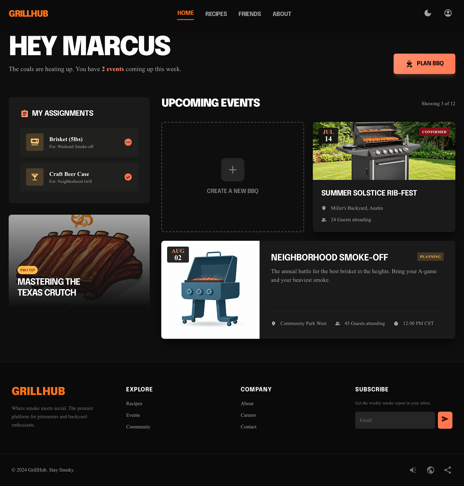
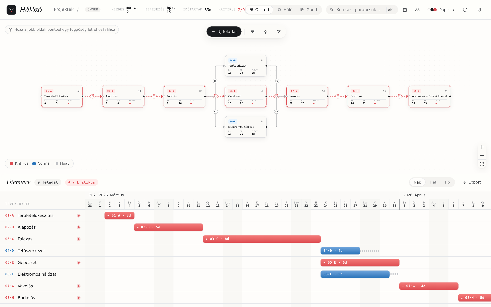
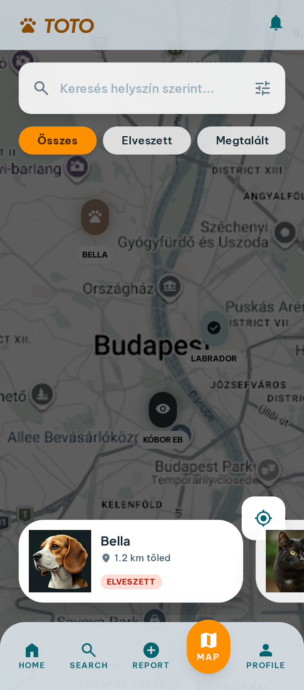
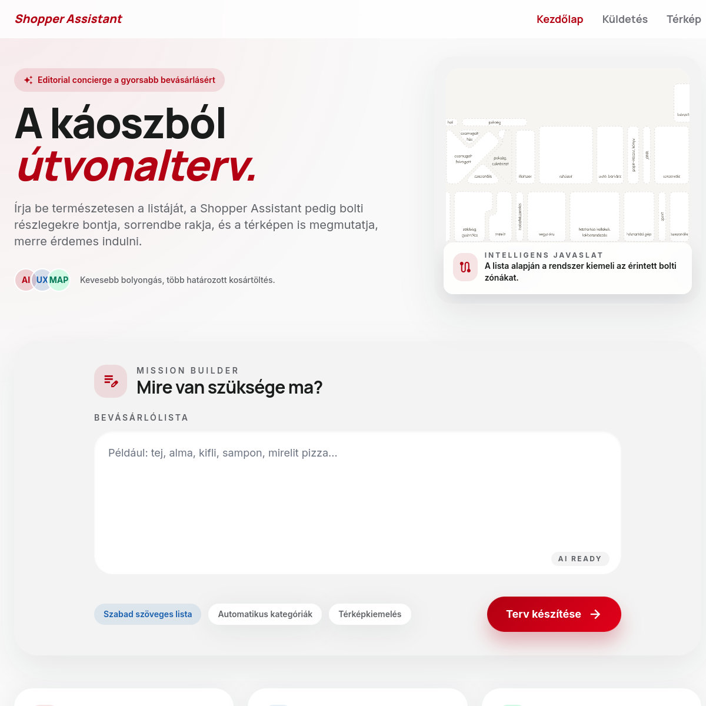
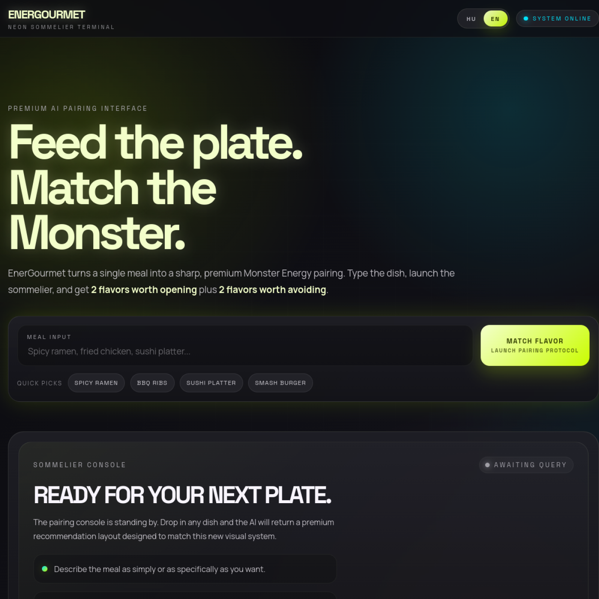

Community BBQ platform
GrillHub
Events, recipes, invitations, friends and shopping lists meet in one workflow for organising cook-outs.
Independent project laboratory
Vitya Labs is the shelf for useful experiments: community concepts, visual tools and AI-assisted oddities that were too interesting to leave as notes.
Current experiments
Five live ideas ranging from community workflows to delightfully specific AI and optimisation tools.

Community BBQ platform
Events, recipes, invitations, friends and shopping lists meet in one workflow for organising cook-outs.

CPM network & Gantt scheduler
Draw a construction schedule as a network; the critical path and Gantt chart recompute with every edit.

Track Others Together Outside
A mobile-first community map for reporting and finding lost, found and stray animals.

Shopping route optimiser
Turns a raw shopping list into a category-sorted route and explains it on a visual store map.

AI energy-drink sommelier
A deliberately serious pairing assistant that recommends — and warns against — energy-drink flavours for a meal.
Lab rules
A lab project may be odd, but its use should be clear within a sentence.
Maps, networks and live recomputation turn abstract logic into something you can understand at a glance.
A useful tool can still be warm, witty or confidently over-specific.
The wider workshop
Vitya Games and Vitya Soft now have their own focused homes, all connected through the Markus Viktor index.
Open all collections